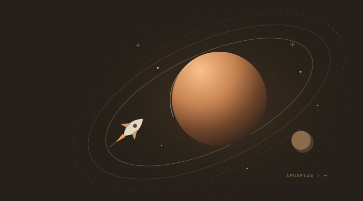

ALL SYSTEMS, ONE PLACE
Your next mission starts here.
A little curiosity.
An entire universe.
Your game, your mods, your next great idea.
Get everything ready for launch.

CC / FLIGHT DECK 001MAKE IT YOURS
More ways to explore.
BUILT BY THE COMMUNITY
Make room for more.
Nine open-source mods. New possibilities for every mission.
No matches this time.
Try another word or select All mods.
Community projects, downloaded from their authors' GitHub releases. Check each mod's build notes before enabling it.
YOUR LOADOUT
Ready when you are.
Enable the mods you want on your next flight.
Your next upgrade is waiting.
Install a mod from Discover to get started.
New mods install disabled. Changes take effect on the next launch. Backups include your mods and enabled list.
SET UP YOUR SPACE
A home for everything.
Connect your game and choose how it launches.
Folders
Graphics profile
Intel Arc on Linux uses the available Mesa Intel driver and FIFO presentation. Other profiles use your system driver.
Backups & logs
Find saved loadouts, previous manifests, and launch diagnostics.
KSA Control Center
Independent, open-source companion for Kitten Space Agency.
Linux tested · Windows build workflow included · Not affiliated with RocketWerkz or Ahwoo